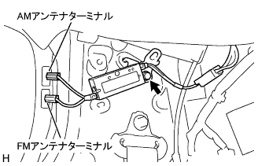
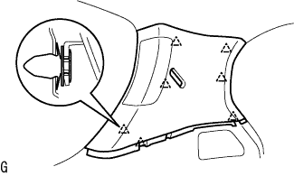
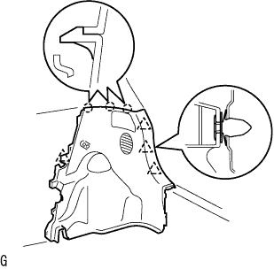
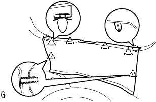
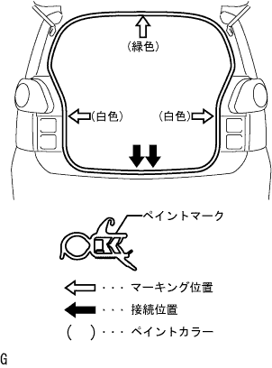
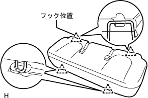

アンプリファイヤ アンテナASSY 取り付け |
| 1. アンプリファイヤ アンテナASSY取り付け |
|  |
ボルト1本でアンプリファイアアンテナASSYを取り付ける。
| 2. ルーフサイド ガーニッシュ INN RH取り付け |
|  |
クリップをかん合させてルーフサイドインナガーニッシュRHを取り付ける。
| 3. デッキトリムサイド パネルASSY RH取り付け |
|  |
クリツプおよびツメをかん合させて、デッキトリムサイドパネルASSY RHを取り付ける。
| 4. クォータトリム パネルASSY FR RH取り付け |
| 5. バックドアスカッフ プレート取り付け |
|  |
両端上部のツメ位置を合わせ、クリツプをかん合させてバツクドアスカツフプレートを取り付ける。
| 6. バックドア ウエザストリップ取り付け |
|  |
ウェザストリップのペイントマーク(白色および緑色、どれか1箇所)とボデー側のウェザストリップ取り付け用切り欠き部(矢印部分)を合わせ、バックドアウェザストリップを取り付ける。
| 7. スペアホイール カバーASSY取り付け |
| 8. リヤフロア カーペット取り付け |
| 9. リヤシート 3ポイントタイプ ベルトASSY OUT RH取り付け |
ボルトでリヤシート 3ポイントタイプ ベルトASSY OUT RH（フロアアンカ部）を締め付ける。
| 10. リヤシートクッションASSY取り付け（リヤシート一体可倒式） |
リヤシートクッションASSY後部のフックをかん合させる。
リヤシートベルトを、リヤシートクッションカバー & パッド後部のゴムバンドに通す。
|  |
リヤシートクッションASSY前部のフックをかん合させる。
| 11. リヤシートクッションASSY取り付け（リヤシート分割可倒式） |
リヤシートクッションASSY前側をリヤシート クッション ロック ストライカにロックさせる。
リヤシートベルトを、リヤシートクッションカバー & パッド後部のゴムバンドに通す。
 |
ボルトで、リヤシートヒンジLHを取り付ける。
リヤシートバックヒンジＲＨにスナップリングを取り付ける。
リヤシートヒンジRHを、リヤシートクッションASSY右側ブラケットの角パイプに挿入する。
| 12. リヤシートバックASSY取り付け（リヤシート一体可倒式） |
ボルト2本をでリヤシートバックASSYを取り付ける。
 |
クリップ2個を取り付ける。
| 13. リヤシートバックASSY LH取り付け（リヤシート分割可倒式） |
ボルト2本でリヤシートバックを取り付ける。
 |
クリップ2個を取り付ける。
| 14. リヤシートバックASSY RH取り付け（リヤシート分割可倒式） |
ボルト2本でリヤシートバックを取り付ける。
クリップ2個を取り付ける。
| 15. フロントシート アウタベルトASSY RH取り付け |
ボルトで、フロントシートアウタベルトASSY RHのフロアアンカ部を取り付ける。
| 16. フロントドア オープニングトリム ウェザストリップ RH取り付け |
 |
ウェザストリップのペイントマーク(白色、どちらか1箇所)を合わせ、フロントドアオープニングトリムウエザストリツプRHを取り付ける。
| 17. フロントドアスカッフ プレート RH取り付け |
 |
スカッフプレート前端部および後端部のツメをかん合させる。
ツメをかん合させ、フロントドアスカッフプレートRHを取り付ける。